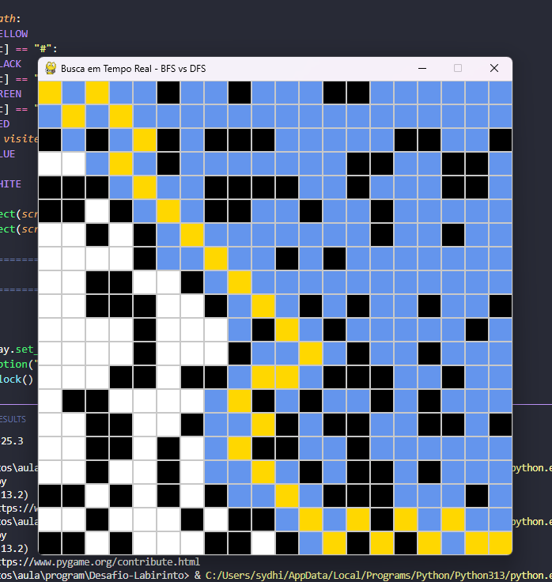
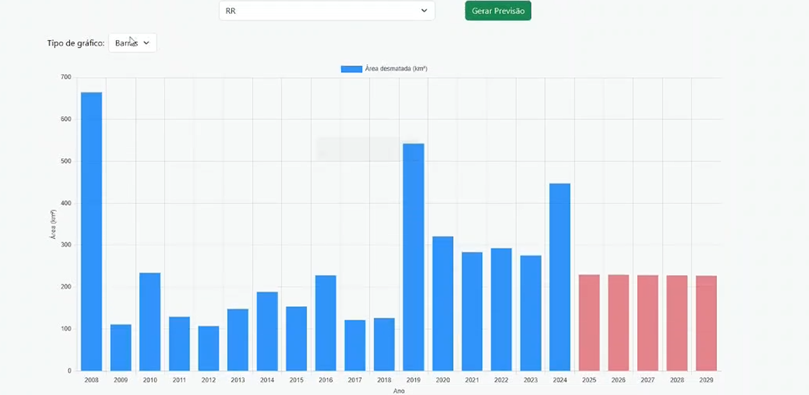

Meus Projetos

Automação de Dados Fiscais
Sistema desenvolvido em Python e Pandas para automatizar o cruzamento e tratamento de dados fiscais pesados a partir de arquivos TXT, substituindo processos manuais ineficientes.
Python Pandas
Clone do Pac-Man
Desenvolvimento da lógica completa do jogo utilizando a biblioteca Pygame, incluindo movimentação em grid, temporizadores de animação e lógica complexa de teletransporte.
Python Pygame
Algoritmos em Labirintos
Projeto acadêmico utilizando computação gráfica para visualização da navegação em labirintos, implementando algoritmos clássicos de busca como BFS e DFS com configuração de obstáculos.
Algoritmos Estrutura de Dados
Modelos Ambientais (IA)
Colaboração na criação de modelos acadêmicos para estimativa de desmatamento até 2030 e uma calculadora de pegada de carbono.
Inteligência Artificial Modelagem